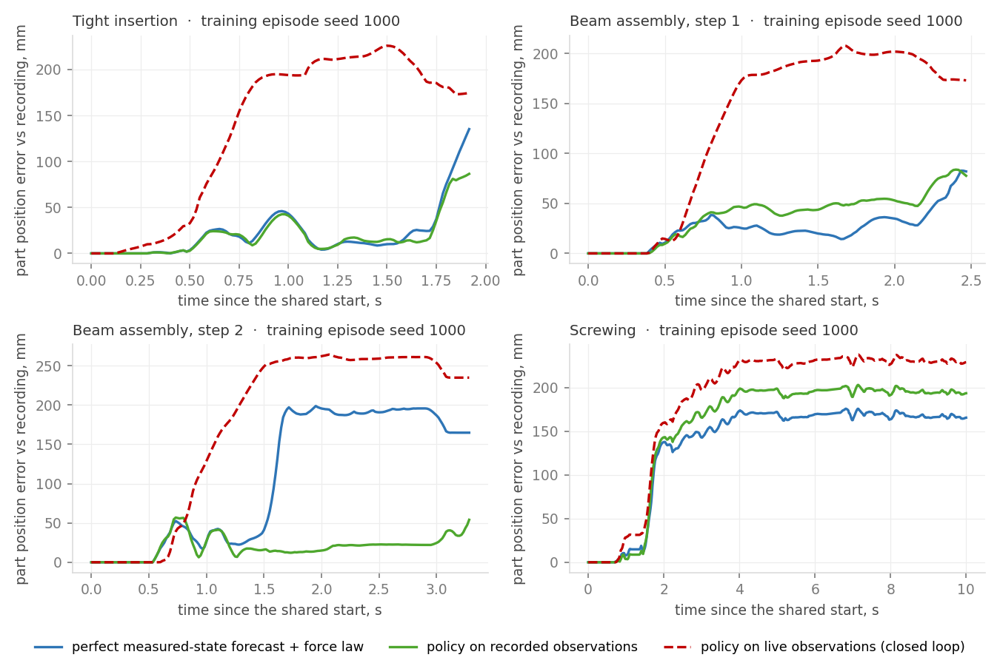
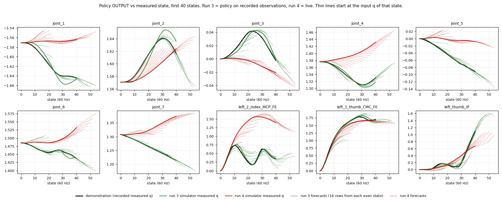
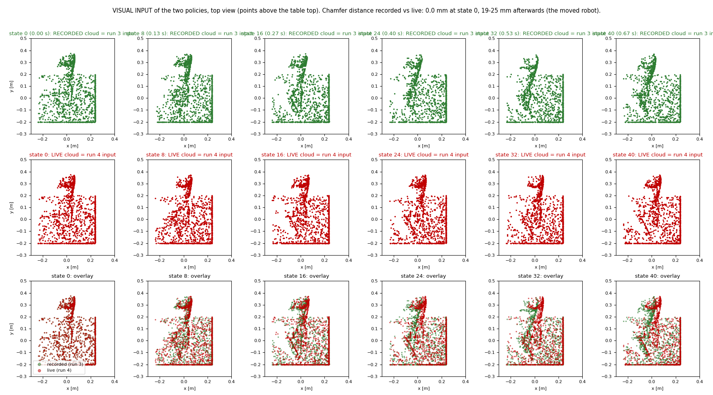
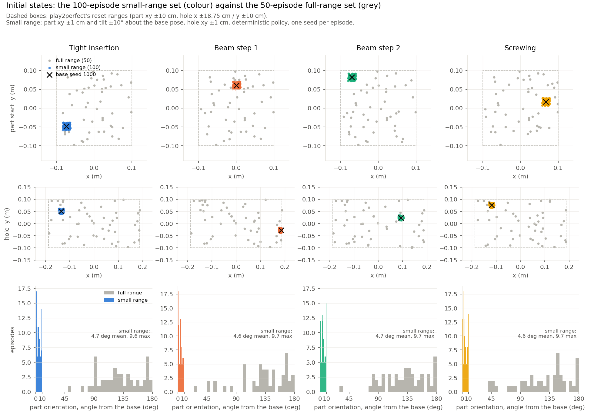
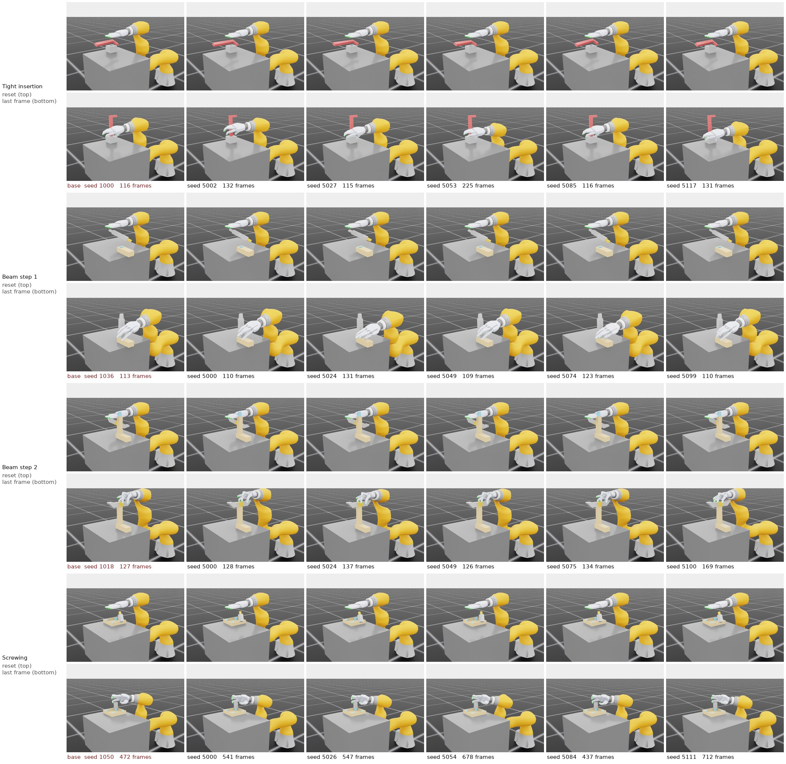
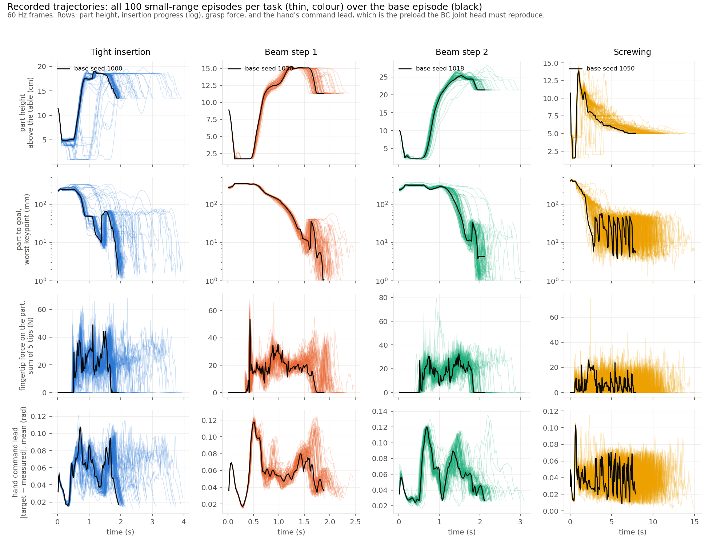
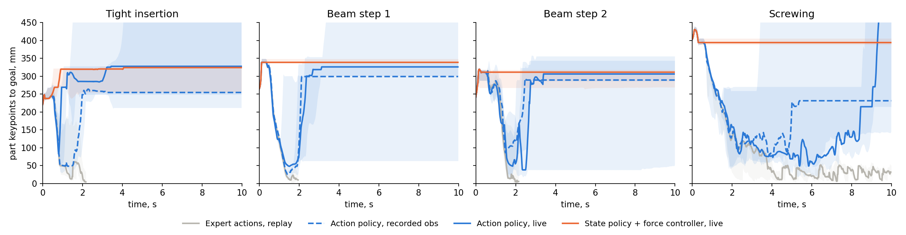
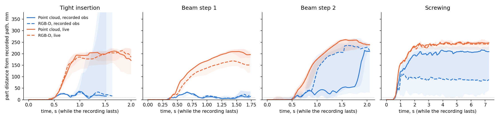

Weeks 4–5
Sep 21 – Oct 4, 2026Week 3 ended at 0 of 80 on fresh starts. This week every rollout is in-domain: it starts from the bit-identical initial state of one of the policy's own training episodes, so the recording is a frame-by-frame reference.
- 1 Four-rung evaluation ladder on training starts: exact replay 20/20, every other rung 0/20.
- 2 Why the live rollout drifts: the forecast is mostly a copy of the velocity input.
- 3 Actuation channel, position offset vs feedforward torque: not the bottleneck.
- 4 A small-range dataset, 100 episodes per task next to one base episode, for overfitting first.
- 5 Per-task action policies (expert RL actions, no force controller): 0/20 live, but the first policy that carries the part toward the goal (7/20 within 30 mm).
- 6 Per-task checkpoints (one policy per task, point cloud and RGB-D) on their own training starts: 0/80 live, 1/80 teacher forced.
- 7 Per-task checkpoints trained on fixed-start sets (with and without push perturbations): 0/160 live, 1/160 teacher forced.
1In-domain closed-loop evaluation: a four-rung ladder
1 · Expert commands, exact replay. Recorded motor targets, no force law. Infrastructure check.
2 · Perfect forecast. No network: the recording's own future measured states, forces and contacts as the chunk. Ceiling of this reference type.
3 · Policy on recorded observations. Real checkpoint, inputs from the recording, forecasts executed live. Teacher forcing.
4 · Policy live. The real closed loop, same start.
Settings
- Episodes: 5 training episodes per task (seeds 1000–1079). 4 tasks × 5 episodes × 7 conditions = 140 rollouts; every reset bit-identical to the recording.
- Policy: Week 3 checkpoints unchanged; point cloud in the videos, RGB in the tables. Rungs 1 and 2 use no network.
- Loop: forecast every 2 states, linear interpolation at 120 Hz, velocity feedforward, task-space force law (kp 0.3, ki 10, clip 0.12 rad). Rung 1: recorded PD targets, hold interpolation, null law.
- Rungs 2 and 3: forecasts end with the recording; the last reference is held 2 s for a verdict.
- End: success = all sub-goals + retract; otherwise 10 s no-progress timeout.
1Expert commands, exact replay infrastructure check
2Perfect measured-state forecast + force law no network, zero forecast error
3Policy on recorded observations point-cloud checkpoint, teacher forced
4Policy live point-cloud checkpoint, closed loop
Outcome, 140 rollouts
| reference source | tight insertion | beam step 1 | beam step 2 | screwing | all | closest keypoint, mm | force bias, N |
|---|---|---|---|---|---|---|---|
| 1 · expert commands, exact replay | 5/5 | 5/5 | 5/5 | 5/5 | 20/20 | 3 | −0.3 |
| 2 · perfect forecast, null law | 0/5 | 0/5 | 0/5 | 0/5 | 0/20 | 228 | −8.7 |
| 2 · perfect forecast + force law | 0/5 | 0/5 | 0/5 | 0/5 | 0/20 | 124 | −6.7 |
| 3 · point-cloud policy, recorded observations | 0/5 | 0/5 | 0/5 | 0/5 | 0/20 | 127 | −5.2 |
| 3 · RGB policy, recorded observations | 0/5 | 0/5 | 0/5 | 0/5 | 0/20 | 144 | −4.6 |
| 4 · point-cloud policy, live | 0/5 | 0/5 | 0/5 | 0/5 | 0/20 | 244 | −0.9 |
| 4 · RGB policy, live | 0/5 | 0/5 | 0/5 | 0/5 | 0/20 | 246 | −0.5 |
Successes per task over 5 training episodes. Closest keypoint and force bias (measured minus target while engaged, worst fingertip): means over the 20 episodes of the row. Live rows have a small bias only because the fingers rarely reach the part.
Departure from the recording
| reference source | worst arm joint error, rad | worst hand joint error, rad | part leaves the recorded path (> 10 mm) at frame | hand forecast error at 267 ms, rad |
|---|---|---|---|---|
| 1 · expert commands | 0.000 | 0.000 | never | – |
| 2 · perfect forecast + force law | 0.03 | 0.25 to 0.40 | 14 to 35 | 0 by construction |
| 3 · policy, recorded observations | 0.03 to 0.04 | 0.26 to 0.50 | 30 to 38 | 0.06 to 0.08 no-motion baseline 0.12 to 0.18 |
| 4 · policy, live | 0.5 to 2.5 | 1.7 to 2.0 | 17 to 36 | 0.31 to 0.40 worse than predicting no motion |
Ranges across the four tasks, point cloud and RGB pooled; frames at 60 Hz. Forecast error = mean |predicted − recorded| of the hand joints at the last row of the chunk.

What each rung says
- Rung 1, 20/20: the evaluation stack is sound.
- Rung 2, 0/20: a measured-state reference is not executable, even when perfect. Measured finger angles carry no squeeze (command leads measured by 0.25–0.6 rad in contact; the force law adds ≤ 0.12 rad). Part slips at the grasp in every task.
- Rung 3, 0/20: reproduces rung 2 (arm within 0.03 rad). Forecast accuracy is fine (hand 0.06–0.08 rad at 267 ms, 2.5× better than no motion). The reference type is the limit, not the fit.
- Rung 4, 0/20: leaves its own demonstration within 10–20 frames, before any contact. Cause in 2.
2Why the live rollout drifts
Rungs 3 and 4: same checkpoint, same start, only the source of the policy's inputs differs. Traced state by state on beam step 1, seed 1000 (no contact, zero force throughout).
Key points
- State 0: identical observation → identical forecast (2×10−7 rad) → identical simulator state through state 2. Policy deterministic; deploy-side inputs equal the training-side computation.
- But the first move is not the expert's: at reset every non-visual input is the same in every episode of a task, and the network ignores the point cloud. State-0 arm forecast identical across 12 training episodes (spread 0.000 rad) while the true first moves spread 0.065 rad. It outputs the dataset-average first move; cosine −0.34 with the expert here.
- State 2, the only difference: rung 3 is shown the recording's state, rung 4 its own simulator's state.
- The velocity input amplifies it: swap test at state 4, cloud and joint positions fixed. Recorded velocity → arm forecast cosine +0.84 with the expert; live velocity → −0.08. Swapping the joint positions instead changes it by 0.03.
- Net: rung 3 looks normal only because it is told every 2 frames that it is where the expert was. Rung 4 follows its own velocity instead of the scene.


How much of the forecast is the velocity input
| policy | task | arm, as trained | arm, velocity inputs zeroed | hand, as trained | hand, velocity inputs zeroed |
|---|---|---|---|---|---|
| Point cloud | tight insertion | 0.93 | 0.10 | 0.81 | 0.19 |
| beam step 1 | 0.91 | 0.15 | 0.85 | 0.28 | |
| beam step 2 | 0.88 | 0.13 | 0.79 | 0.26 | |
| screwing | 0.83 | 0.15 | 0.75 | 0.19 | |
| RGB | tight insertion | 0.90 | 0.26 | 0.72 | 0.29 |
| beam step 1 | 0.88 | 0.23 | 0.77 | 0.32 | |
| beam step 2 | 0.90 | 0.31 | 0.71 | 0.34 | |
| screwing | 0.82 | 0.19 | 0.67 | 0.22 |
Motion gain = slope of predicted on recorded joint displacement at 33 ms, offline on training episodes; 1.0 = right amount of motion. Zeroed: joint-velocity and 33 ms history inputs set to 0. Three quarters or more of the near-term motion is a copy of the velocity input.
Before the next evaluation
- Predict the expert's commands (
joint_target), not measured angles: the reference then carries the preload; the force law becomes a corrector. - Remove the joint-velocity and history inputs, or corrupt them heavily in training.
- Make the cloud informative: workspace crop or part-centred points (today 20–50 of 4096 points lie on the part).
- Acceptance order for a new checkpoint: rung 3 on training episodes, rung 4 on the same episodes, then fresh seeds.
3Actuation channel: position offset vs feedforward torque
Force so far = command the joint past the contact, so the servo's tracking error becomes the squeeze
(dq = −K−1JTf). Objection: position control is the wrong channel for a closed force loop.
Test: the same commanded force delivered as joint torque (τ = −JTf).
Settings
- Episodes: 12 perfect expert episodes, 3 per task; 2 conditions = 24 rollouts, one cold-start process each.
- Reference: oracle chunk policy re-planned every 12 frames from the current state, so both arms share it only until their control diverges. Measured joint states, so the law must supply the preload (rung 2 of 1).
- Position arm: task-space law, kp 0.3, ki 10, offset clip 0.12 rad.
- Torque arm: same commanded force as joint torque, clipped at the servo limits (0.4 to 3.3 N·m); position target keeps the reference + contact-point channel only.
Same actuator, different limit
- Implicit PD torque =
K(q* − q) + τff. Position addsK·dq = −JTf, torque adds−JTf: identical commanded torque. - Only the saturation differs: the 0.12 rad offset clip is a per-joint torque cap of 0.11 N·m on the distal joints, vs a servo limit up to 3.3 N·m.
- Lifting the position clip delivers +8.50 N at a 20 N request vs +8.77 N for torque: the gap is the clip, not the channel.
- Both channels deliver only 0.4 to 0.5 N per newton asked, even unsaturated.
| force requested, N | position: peak offset, rad | position: delivered, N | torque: peak torque, N·m | torque: delivered, N |
|---|---|---|---|---|
| 2 | 0.059 | +0.98 | 0.09 | +1.00 |
| 5 | 0.120 at the clip | +1.93 | 0.23 | +1.94 |
| 10 | 0.120 at the clip | +2.47 | 0.46 | +3.53 |
| 20 | 0.120 at the clip | +3.88 | 0.93 | +8.77 |
Tight insertion, frame 128, thumb loaded at 19.3 N. Delivered = mean pad force over a 12-step hold minus the same hold with nothing applied. Below the clip the two agree to 1–2 %.
Closed-loop outcome, 24 rollouts
| force channel | tight insertion | beam step 1 | beam step 2 | screwing | all | sub-goals | dropped | closest keypoint, mm | force bias, N |
|---|---|---|---|---|---|---|---|---|---|
| position offset as before | 0/3 | 3/3 | 0/3 | 0/3 | 3/12 | 7 | 7/12 | 97 | −3.60 |
| feedforward torque | 0/3 | 0/3 | 0/3 | 0/3 | 0/12 | 6 | 6/12 | 143 | −3.31 |
Success = all sub-goals + retract. Sub-goals: every sub-goal reached across the 12 rollouts; closest keypoint and force bias are means over them.
Key points
- The channel is not the bottleneck: torque loses the three beam-step-1 episodes position wins, and that is the whole gap. Torque has the smallest force bias of any setting so far: best force tracking, worst task.
- As the mechanism predicts: a wider clip only buys more squeeze, and wider clips were already measured harmful in Weeks 1–2 (clip 0.20 rad: 0 of 12).
- One lead: screwing seed 0, torque 6 of 10 sub-goals with the part held; position 0 and dropped. Single episode.
- Off-simulator the objection stands: stiff hardware servos, bandwidth, no torque interface. These simulated servos already act as a compliant force source.
- The real limit is unchanged: a per-fingertip force law cannot reconstruct a preload the reference never contained (1, rung 2).
4A small-range dataset for overfitting first
Same expert, physics and format as the Week 3 set; every episode starts next to one recorded base episode. A set the policy should be able to reproduce, to separate a modelling problem from a coverage problem.
Collection
- Base episode: shortest accepted Week 3 episode per task (seeds 1000, 1036, 1018, 1050).
- Range: part xy ±1 cm, tilt ≤10° about the base pose; hole xy ±1 cm; robot start fixed; goal-observation noise off. A range at all because expert and simulator are deterministic.
- Seeds: 5000 upward, one cold-start process each; Week 3 acceptance test unchanged.
- Per episode: same arrays as Week 3; depth, point cloud and wrist views re-rendered afterwards.
- Cost: 38 s per seed (55 s screwing), 4 tasks in 5 h, 8.2 GB.
| task | base seed | seeds tried | accepted | rejected (reason) | frames min / median / max | Week 3 set: accepted / tried | Week 3 frames min / mean / max |
|---|---|---|---|---|---|---|---|
| tight insertion | 1000 | 118 | 100 (85 %) | 18 (14 dropped, 4 timeout) | 103 / 124 / 238 | 50 / 66 (76 %) | 116 / 197 / 653 |
| beam assembly, step 1 | 1036 | 100 | 100 (100 %) | 0 | 105 / 114 / 148 | 50 / 58 (86 %) | 113 / 205 / 604 |
| beam assembly, step 2 | 1018 | 101 | 100 (99 %) | 1 (dropped) | 121 / 128 / 186 | 50 / 78 (64 %) | 127 / 230 / 548 |
| screwing | 1050 | 112 | 100 (89 %) | 12 (11 timeout, 1 stalled) | 437 / 606 / 903 | 50 / 80 (62 %) | 472 / 671 / 1037 |
Frames at 60 Hz. Episodes are shorter and more uniform than Week 3; the tight-insertion tail = expert misses the hole once and retries.



Left: base episode (Week 3 set). Right: one new episode started next to it. Goal marker hidden, as in the training images.
Use
- Train on this set alone; evaluate rungs 3 and 4 on its own episodes.
- Fails on 100 near-identical episodes → modelling problem. Passes → Week 3 set, then fresh seeds.
- Base seeds and ranges are stored in every episode; the set can be regenerated or widened step by step.
5Per-task action policies: the expert's RL actions, no force controller
Same model, inputs and training starts as the point-cloud policies of 6, but the target is the expert's next 16 RL actions (the commands, not measured states). They are executed exactly as the expert's were: through play2perfect's own action pipeline, with no middle layer and no force law.
Settings
- Checkpoints: 4 per-task EgoVerse HPT flow-matching policies, point cloud + the usual state inputs, trained 21.2k steps on that task's 90
bc_dataset_smalltraining episodes. Output: a[s…s+15], 29-dim in [−1, 1] (7 arm + 22 hand). - Execution: forecast every 2 states; each frame the chunk's action for that state goes through the env's pipeline: arm target += 1.5 rad/s × dt × a, then EMA 0.1; hand = EMA 0.1 of the action mapped onto the joint range. Both physics substeps hold that target. Mean of 128 samples × 5 Euler steps per forecast.
- Loading: the raw EgoVerse checkpoints were converted to the
bc_sim_v2format (same network, strict weight load). Offline on validation episodes the converted policy matches the EgoVerse predictions to 0.013–0.016 action units (sampling noise) and is as accurate against the true actions. - Rung 1 here: the recorded actions through the same path reproduce every recording exactly (0.000 rad, 0.0 mm): 20/20.
- Episodes: the same 20 training starts as 6 (seeds 5000–5117), so the columns compare directly with the state-forecast policy.
Same training episode in every clip. The last clip is the state-forecast point-cloud policy of 6 (+ force law) from the same start.
1Expert actions, exact replay infrastructure check
3Action policy on recorded observations teacher forced
4Action policy live closed loop
4State-forecast policy + force controller, live section 6, for comparison
Outcome, 60 rollouts (+ the matching rows of 6)
| reference source | tight insertion | beam step 1 | beam step 2 | screwing | all | closest approach to goal, mm | runs within 30 mm | part dropped |
|---|---|---|---|---|---|---|---|---|
| 1 · expert actions, exact replay | 5/5 | 5/5 | 5/5 | 5/5 | 20/20 | 3 | 20/20 | 0 |
| 3 · action policy, recorded obs | 0/5 | 0/5 | 0/5 | 0/5 | 0/20 | 56 | 6/20 | 2 |
| 4 · action policy, live | 0/5 | 0/5 | 0/5 | 0/5 | 0/20 | 69 | 7/20 | 6 |
| 3 · state policy + force law, recorded obs from 6 | 0/5 | 0/5 | 0/5 | 0/5 | 0/20 | 126 | 5/20 | 1 |
| 4 · state policy + force law, live from 6 | 0/5 | 0/5 | 0/5 | 0/5 | 0/20 | 282 | 0/20 | 0 |
Closest approach = the env's keypoint distance of the part to its goal, minimum over the rollout, mean over the 20 episodes (it starts at 220–400 mm). One teacher-forced run reached a sub-goal (beam step 1, seed 5001: 1 of 2).
Departure from the recording
| reference source | worst arm joint error, rad | worst hand joint error, rad | hand > 0.2 rad off at frame | part > 10 mm off at frame |
|---|---|---|---|---|
| 3 · action policy, recorded obs | 0.04 | 0.39 | 74 | 70 |
| 4 · action policy, live | 0.21 | 1.24 | 27 | 37 |
| 4 · state policy + force law, live from 6 | 0.68 | 1.76 | 7 | 31 |
Means over the 20 episodes (frames: medians), 60 Hz. The action policy stays on the demonstration about four times longer before the hand departs.

What the action target changes
- Still 0/20, but for the first time a live policy grasps, lifts and carries the part toward the goal: closest approach 28–113 mm per task (mean), 7/20 runs within 30 mm (none on tight insertion), 6 drop the part on the way (3 of them screwing).
- Longer on the demonstration: hand > 0.2 rad off at frame 27 instead of 7. Commands already contain the squeeze and are executed with the expert's own smoothing, so no reference-type or force-law mismatch remains.
- Remaining failure = the final approach: the part reaches 30–100 mm of the goal and then slips or misses the hole. Teacher forcing does not fix it (0/20, 1 sub-goal), so the per-step action fit, not only compounding drift, is limiting.
- Next: evaluate the multi-task action checkpoint on the same starts; more samples or chunk ensembling (the expert's actions sit at ±1 most of the time, 78 % on tight insertion, and averaging 128 samples pulls them inward); an RGB-D action policy.
6Per-task checkpoints on their own training starts
One policy per task instead of one for all four, trained on the small-range set of 4. Every rollout starts from the recorded initial state of one of that policy's training episodes; policy forecasts + the force controller, as in 1.
Settings
- Checkpoints: 8 = 4 tasks × {point cloud, RGB-D}. EgoVerse HPT (16-block trunk, flow-matching head), 21k steps on that task's 90 training episodes; inputs and outputs as before (joint positions, EMA velocity, EMA force, contacts, 33 ms history; 16 future measured states, forces and contacts as changes from the current state). Offline on validation episodes they are slightly better than one policy for all tasks (hand 0.041–0.057 vs 0.045–0.057 rad).
- Episodes: 5 training episodes per task (seeds 5000–5117, evenly spaced through the train split), the recorded initial state restored exactly. 4 tasks × 5 × 2 visual inputs × 2 force laws × 2 input sources = 160 rollouts.
- Input sources: live = the real closed loop; recorded observations = the policy is fed the recording's inputs at every state (teacher forcing), its forecasts executed live.
- Sampling: each forecast = mean of 128 samples × 5 Euler steps (~55 ms); noise seeded per episode.
- Loop: forecast every 2 states, linear interpolation, velocity feedforward, task-space force law (kp 0.3, ki 10, clip 0.12 rad) or the null law (position only); position-PD actuation. Visuals delayed 2 states to match the training recordings.
- End: success = all sub-goals + retract (env verdict); otherwise 10 s without progress, or the recording ends and the last reference is held 2 s (teacher forced).
All five clips are the same training episode (same seed, same restored start); only the reference source differs. Task-space force law.
1Expert commands, exact replay infrastructure check
3Point-cloud policy on recorded observations teacher forced
3RGB-D policy on recorded observations teacher forced
4Point-cloud policy live closed loop
4RGB-D policy live closed loop
Outcome, 160 rollouts
| reference source | tight insertion | beam step 1 | beam step 2 | screwing | all | closest keypoint, mm | force bias, N |
|---|---|---|---|---|---|---|---|
| 3 · point-cloud policy, recorded obs + force law | 0/5 | 0/5 | 0/5 | 0/5 | 0/20 | 126 | −2.7 |
| 3 · point-cloud policy, recorded obs, null law | 0/5 | 0/5 | 0/5 | 0/5 | 0/20 | 191 | −4.2 |
| 3 · RGB-D policy, recorded obs + force law | 0/5 | 1/5 | 0/5 | 0/5 | 1/20 | 112 | −2.8 |
| 3 · RGB-D policy, recorded obs, null law | 0/5 | 0/5 | 0/5 | 0/5 | 0/20 | 175 | −3.4 |
| 4 · point-cloud policy, live + force law | 0/5 | 0/5 | 0/5 | 0/5 | 0/20 | 282 | −1.6 |
| 4 · point-cloud policy, live, null law | 0/5 | 0/5 | 0/5 | 0/5 | 0/20 | 281 | −1.5 |
| 4 · RGB-D policy, live + force law | 0/5 | 0/5 | 0/5 | 0/5 | 0/20 | 277 | −1.8 |
| 4 · RGB-D policy, live, null law | 0/5 | 0/5 | 0/5 | 0/5 | 0/20 | 282 | −1.6 |
Successes per task over 5 training episodes. Closest keypoint and force bias (worst fingertip, measured minus target while engaged): means over the 20 episodes of a row. Rung 1 (expert commands, exact replay) on the same 20 starts: 20/20. The one success: beam step 1, seed 5024, both sub-goals + retract in 2.5 s (the recording took 2.2 s); the part stayed within 33 mm of its recorded path.
Departure from the recording
| reference source | worst arm joint error, rad | worst hand joint error, rad | hand > 0.2 rad off at frame | part > 10 mm off at frame | hand forecast error at 33 / 267 ms, rad |
|---|---|---|---|---|---|
| 3 · policy, recorded obs | 0.02 to 0.08 | 0.28 to 0.43 | 31 to 48 | 24 to 38 | 0.015 / 0.09 to 0.10 no motion 0.12 to 0.22 |
| 4 · policy, live | 0.11 to 1.8 | 1.6 to 2.0 | 4 to 16 | 24 to 36 | 0.27 to 0.41 / 0.29 to 0.41 worse than no motion |
Ranges across the four tasks, point cloud and RGB-D, task-space law; frames at 60 Hz; medians over episodes for the frame columns. Forecast error = mean |predicted − recorded| of the hand joints.

What the per-task policies change
- Nothing live: 0/80. The hand is > 0.2 rad off the recording within 4–16 frames, the part never gets closer to its goal than at reset (4 mm on average, 47 mm at best), and the part is knocked off its path at 0.4–0.6 s.
- Teacher forced, marginally: first success of any learned policy in the ladder (RGB-D, beam step 1, 1/5). Beam step 1 is the task where the part stays near its path (36 mm worst); on the others the part is still lost at the grasp.
- Same failure modes as one policy for all tasks: forecast accuracy teacher forced is unchanged (hand 0.015 rad at 33 ms), so splitting by task removes no bottleneck. Measured-state references still carry no squeeze, and the velocity/history inputs still dominate the live forecast.
- Next: predict the expert's commands (
joint_target), deploy them with hold interpolation, no velocity lead and a much weaker force law; drop or corrupt the velocity and history inputs.
7Per-task checkpoints trained on fixed-start sets
Two new training sets remove start variation: every episode of a task starts from the same state (the small-range set's base episode). In the second set the part also received random push impulses during collection, so the demonstrations include recoveries. Policies as in 6 (state forecast + force controller), one per task, point cloud and RGB-D.
Settings
- Training sets:
bc_dataset_fixedandbc_dataset_fixed_perturbed, 100 successful episodes per task, 90 for training. Both start from the identical state (verified: 0.0 difference). Perturbed: play2perfect's wrench randomisation on the part, N(0,1) × mass × 10 m/s2 with probability 0.05 per step. - Checkpoints: 16 = 2 sets × 4 tasks × {point cloud, RGB-D}, the same model and training as 6.
- Episodes: 5 training episodes per task per set (same start; only the sampling-noise seed differs). 2 sets × 4 tasks × 5 × 2 inputs × 2 laws × 2 input sources = 320 rollouts, plus 20 exact replays of the fixed set's recorded commands (20/20).
- Visual timing: these sets record the camera at the current state (lag 0; the earlier sets lag 2 states). Verified by replay: depth identical to the stored frames.
- No pushes during evaluation: rollouts of the perturbed-set policies are unperturbed. Their recordings contain pushes, so the part leaves its recorded path after 6–11 frames even when the policy is fed the recording.
One start per task for both sets; episode k = the k-th evaluated training episode of each set (same start, different sampling noise). Live, task-space force law.
1Expert commands, exact replay fixed set
4Fixed set, point-cloud policy live
4Fixed set, RGB-D policy live
4Fixed + pushes set, point-cloud policy live
4Fixed + pushes set, RGB-D policy live
Outcome, 340 rollouts
| training set · input · law | recorded obs | live | closest approach, mm recorded obs / live |
|---|---|---|---|
| fixed · expert commands, exact replay | 20/20 | 2 | |
| fixed · point cloud · force law | 1/20 | 0/20 | 152 / 281 |
| fixed · point cloud · null law | 0/20 | 0/20 | 154 / 281 |
| fixed · RGB-D · force law | 0/20 | 0/20 | 153 / 274 |
| fixed · RGB-D · null law | 0/20 | 0/20 | 140 / 280 |
| fixed + pushes · point cloud · force law | 0/20 | 0/20 | 196 / 281 |
| fixed + pushes · point cloud · null law | 0/20 | 0/20 | 216 / 281 |
| fixed + pushes · RGB-D · force law | 0/20 | 0/20 | 193 / 281 |
| fixed + pushes · RGB-D · null law | 0/20 | 0/20 | 224 / 281 |
20 = 4 tasks × 5 episodes. The one success: fixed set, point cloud, force law, teacher forced, beam step 1 (both sub-goals + retract in 2.1 s; the recording took 1.9 s). Live, the part barely moves toward its goal: closest approach 274–281 mm against 281 mm at the start (averaged over tasks); only a few RGB-D runs get it somewhat closer.
What removing start variation changes
- Nothing live: 0/160. Hand > 0.2 rad off at frame 6–17, as with the small-range set. Identical starts do not fix a state-forecast reference executed through the force controller.
- Better fit offline, not in the loop: offline these policies beat the small-range ones on their own validation episodes (hand 0.030–0.045 vs 0.042–0.052 rad). Teacher forced they still lose the part at the grasp (1/80 and 0/80).
- Pushes do not help here: the perturbed set's policies are no better teacher forced or live. Its evaluation is unperturbed, so recovery behaviour is never exercised.
- Taken with 5: the target (commands vs measured states, executed by the expert's own path) matters more than the training set.